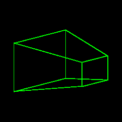
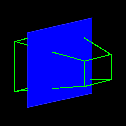
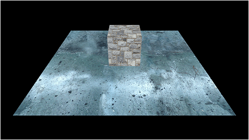
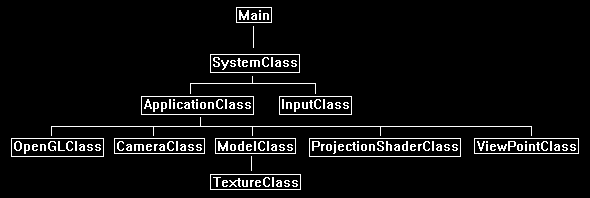

This tutorial will cover projective texturing in OpenGL 4.0 using GLSL and C++.
Projective texturing is one of the most critical concepts you need to have a strong understanding of to perform most of the advanced rendering techniques for real time applications.
For example, soft shadows, water, projective light maps, and reflections all require projective texturing.
Projective texturing simply put is just projecting a 2D texture onto a 3D scene from a specific view point.
It works in a similar fashion to the way we use a camera view point to render a 3D scene onto the 2D back buffer.
We first create a viewing frustum from the view point from where we want to project the texture from.
This would look something like the following:

Then whenever we find that the viewing frustum has intersected with another 3D object, we would draw a pixel from the texture that matches the projected location.
For example, if we projected a texture onto a blue plane, we would end up rendering the texture inside the green boundary area that intersects with the blue 3D plane:

For this tutorial we will start with the following 3D scene of a cube sitting on a plane:

Then we will use the following texture as the texture we want to project onto our 3D scene:
Then we will setup the view point from where we want to project and also the location to where we want to project.
The "from" location will be called the view point, and the "to" location will be called the look at point.
In this example our from location (view point) will be behind the camera to the upper right corner of the scene.
And we will set the location to project to (the look at point) as the center of the scene.
We then setup a view and projection matrix with these parameters and then render the scene projecting the texture onto it.
This gives us the following result:
Framework
The framework has two new classes added to it.
The new ProjectionShaderClass handles the shader functionality for rendering using an additional projection setup.
And the new ViewPointClass provides us a class that encapsulates the location we want to view the scene from, as well as creating the needed matrices for that view point.

We will start the code section of the tutorial by looking at the projection shader GLSL code first.
Projection.vs
////////////////////////////////////////////////////////////////////////////////
// Filename: projection.vs
////////////////////////////////////////////////////////////////////////////////
#version 400
/////////////////////
// INPUT VARIABLES //
/////////////////////
in vec3 inputPosition;
in vec2 inputTexCoord;
in vec3 inputNormal;
//////////////////////
// OUTPUT VARIABLES //
//////////////////////
out vec2 texCoord;
The output viewPosition is the position of the vertice as viewed by the location where we are going to the project the texture from.
out vec4 viewPosition;
///////////////////////
// UNIFORM VARIABLES //
///////////////////////
uniform mat4 worldMatrix;
uniform mat4 viewMatrix;
uniform mat4 projectionMatrix;
We will require a separate input view and projection matrix for the view point that we want to project the texture from.
uniform mat4 viewMatrix2;
uniform mat4 projectionMatrix2;
////////////////////////////////////////////////////////////////////////////////
// Vertex Shader
////////////////////////////////////////////////////////////////////////////////
void main(void)
{
// Calculate the position of the vertex against the world, view, and projection matrices.
gl_Position = vec4(inputPosition, 1.0f) * worldMatrix;
gl_Position = gl_Position * viewMatrix;
gl_Position = gl_Position * projectionMatrix;
Calculate the position of the vertice from the view point of where we are projecting the texture from.
Note we can use the regular world matrix but we use the second pair of view and projection matrices.
// Store the position of the vertice as viewed by the projection view point in a separate variable.
viewPosition = vec4(inputPosition, 1.0f) * worldMatrix;
viewPosition = viewPosition * viewMatrix2;
viewPosition = viewPosition * projectionMatrix2;
// Store the texture coordinates for the pixel shader.
texCoord = inputTexCoord;
}
Projection.ps
////////////////////////////////////////////////////////////////////////////////
// Filename: projection.ps
////////////////////////////////////////////////////////////////////////////////
#version 400
/////////////////////
// INPUT VARIABLES //
/////////////////////
in vec2 texCoord;
in vec4 viewPosition;
//////////////////////
// OUTPUT VARIABLES //
//////////////////////
out vec4 outputColor;
///////////////////////
// UNIFORM VARIABLES //
///////////////////////
uniform sampler2D shaderTexture;
The projectionTexture is the texture that we will be projecting onto the scene.
uniform sampler2D projectionTexture;
////////////////////////////////////////////////////////////////////////////////
// Pixel Shader
////////////////////////////////////////////////////////////////////////////////
void main(void)
{
vec2 projectTexCoord;
Now we calculate the projection coordinates for sampling the projected texture from.
These coordinates are the position the vertex is being viewed from by the location of the projection view point.
The coordinates are translated into 2D screen coordinates and moved into the 0.0f to 1.0f range from the -0.5f to +0.5f range.
// Calculate the projected texture coordinates.
projectTexCoord.x = viewPosition.x / viewPosition.w / 2.0f + 0.5f;
projectTexCoord.y = viewPosition.y / viewPosition.w / 2.0f + 0.5f;
Next, we need to check if the coordinates are in the 0.0f to 1.0f range.
If it is inside the 0.0f to 1.0f range then this pixel is inside the projected texture area and we need to apply the projected texture to the output pixel.
If they are not in that range then this pixel is not in the projection area, so it is just textured with the regular texture.
// Determine if the projected coordinates are in the 0 to 1 range. If it is then this pixel is inside the projected view port.
if((clamp(projectTexCoord.x, 0.0, 1.0) == projectTexCoord.x) && (clamp(projectTexCoord.y, 0.0, 1.0) == projectTexCoord.y))
{
// Sample the color value from the projection texture using the sampler at the projected texture coordinate location.
outputColor = texture(projectionTexture, projectTexCoord);
}
else
{
// Sample the pixel color from the texture using the sampler at this texture coordinate location.
outputColor = texture(shaderTexture, texCoord);
}
}
Projectionshaderclass.h
The ProjectionShaderClass is just the TextureShaderClass rewritten to handle the additional texture projection.
////////////////////////////////////////////////////////////////////////////////
// Filename: projectionshaderclass.h
////////////////////////////////////////////////////////////////////////////////
#ifndef _PROJECTIONSHADERCLASS_H_
#define _PROJECTIONSHADERCLASS_H_
//////////////
// INCLUDES //
//////////////
#include <iostream>
using namespace std;
///////////////////////
// MY CLASS INCLUDES //
///////////////////////
#include "openglclass.h"
////////////////////////////////////////////////////////////////////////////////
// Class name: ProjectionShaderClass
////////////////////////////////////////////////////////////////////////////////
class ProjectionShaderClass
{
public:
ProjectionShaderClass();
ProjectionShaderClass(const ProjectionShaderClass&);
~ProjectionShaderClass();
bool Initialize(OpenGLClass*);
void Shutdown();
bool SetShaderParameters(float*, float*, float*, float*, float*);
private:
bool InitializeShader(char*, char*);
void ShutdownShader();
char* LoadShaderSourceFile(char*);
void OutputShaderErrorMessage(unsigned int, char*);
void OutputLinkerErrorMessage(unsigned int);
private:
OpenGLClass* m_OpenGLPtr;
unsigned int m_vertexShader;
unsigned int m_fragmentShader;
unsigned int m_shaderProgram;
};
#endif
Projectionshaderclass.cpp
////////////////////////////////////////////////////////////////////////////////
// Filename: projectionshaderclass.cpp
////////////////////////////////////////////////////////////////////////////////
#include "projectionshaderclass.h"
ProjectionShaderClass::ProjectionShaderClass()
{
m_OpenGLPtr = 0;
}
ProjectionShaderClass::ProjectionShaderClass(const ProjectionShaderClass& other)
{
}
ProjectionShaderClass::~ProjectionShaderClass()
{
}
bool ProjectionShaderClass::Initialize(OpenGLClass* OpenGL)
{
char vsFilename[128];
char psFilename[128];
bool result;
// Store the pointer to the OpenGL object.
m_OpenGLPtr = OpenGL;
We load the projection.vs and projection.ps GLSL shader files here.
// Set the location and names of the shader files.
strcpy(vsFilename, "../Engine/projection.vs");
strcpy(psFilename, "../Engine/projection.ps");
// Initialize the vertex and pixel shaders.
result = InitializeShader(vsFilename, psFilename);
if(!result)
{
return false;
}
return true;
}
void ProjectionShaderClass::Shutdown()
{
// Shutdown the shader.
ShutdownShader();
// Release the pointer to the OpenGL object.
m_OpenGLPtr = 0;
return;
}
bool ProjectionShaderClass::InitializeShader(char* vsFilename, char* fsFilename)
{
const char* vertexShaderBuffer;
const char* fragmentShaderBuffer;
int status;
// Load the vertex shader source file into a text buffer.
vertexShaderBuffer = LoadShaderSourceFile(vsFilename);
if(!vertexShaderBuffer)
{
return false;
}
// Load the fragment shader source file into a text buffer.
fragmentShaderBuffer = LoadShaderSourceFile(fsFilename);
if(!fragmentShaderBuffer)
{
return false;
}
// Create a vertex and fragment shader object.
m_vertexShader = m_OpenGLPtr->glCreateShader(GL_VERTEX_SHADER);
m_fragmentShader = m_OpenGLPtr->glCreateShader(GL_FRAGMENT_SHADER);
// Copy the shader source code strings into the vertex and fragment shader objects.
m_OpenGLPtr->glShaderSource(m_vertexShader, 1, &vertexShaderBuffer, NULL);
m_OpenGLPtr->glShaderSource(m_fragmentShader, 1, &fragmentShaderBuffer, NULL);
// Release the vertex and fragment shader buffers.
delete [] vertexShaderBuffer;
vertexShaderBuffer = 0;
delete [] fragmentShaderBuffer;
fragmentShaderBuffer = 0;
// Compile the shaders.
m_OpenGLPtr->glCompileShader(m_vertexShader);
m_OpenGLPtr->glCompileShader(m_fragmentShader);
// Check to see if the vertex shader compiled successfully.
m_OpenGLPtr->glGetShaderiv(m_vertexShader, GL_COMPILE_STATUS, &status);
if(status != 1)
{
// If it did not compile then write the syntax error message out to a text file for review.
OutputShaderErrorMessage(m_vertexShader, vsFilename);
return false;
}
// Check to see if the fragment shader compiled successfully.
m_OpenGLPtr->glGetShaderiv(m_fragmentShader, GL_COMPILE_STATUS, &status);
if(status != 1)
{
// If it did not compile then write the syntax error message out to a text file for review.
OutputShaderErrorMessage(m_fragmentShader, fsFilename);
return false;
}
// Create a shader program object.
m_shaderProgram = m_OpenGLPtr->glCreateProgram();
// Attach the vertex and fragment shader to the program object.
m_OpenGLPtr->glAttachShader(m_shaderProgram, m_vertexShader);
m_OpenGLPtr->glAttachShader(m_shaderProgram, m_fragmentShader);
// Bind the shader input variables.
m_OpenGLPtr->glBindAttribLocation(m_shaderProgram, 0, "inputPosition");
m_OpenGLPtr->glBindAttribLocation(m_shaderProgram, 1, "inputTexCoord");
m_OpenGLPtr->glBindAttribLocation(m_shaderProgram, 2, "inputNormal");
// Link the shader program.
m_OpenGLPtr->glLinkProgram(m_shaderProgram);
// Check the status of the link.
m_OpenGLPtr->glGetProgramiv(m_shaderProgram, GL_LINK_STATUS, &status);
if(status != 1)
{
// If it did not link then write the syntax error message out to a text file for review.
OutputLinkerErrorMessage(m_shaderProgram);
return false;
}
return true;
}
void ProjectionShaderClass::ShutdownShader()
{
// Detach the vertex and fragment shaders from the program.
m_OpenGLPtr->glDetachShader(m_shaderProgram, m_vertexShader);
m_OpenGLPtr->glDetachShader(m_shaderProgram, m_fragmentShader);
// Delete the vertex and fragment shaders.
m_OpenGLPtr->glDeleteShader(m_vertexShader);
m_OpenGLPtr->glDeleteShader(m_fragmentShader);
// Delete the shader program.
m_OpenGLPtr->glDeleteProgram(m_shaderProgram);
return;
}
char* ProjectionShaderClass::LoadShaderSourceFile(char* filename)
{
FILE* filePtr;
char* buffer;
long fileSize, count;
int error;
// Open the shader file for reading in text modee.
filePtr = fopen(filename, "r");
if(filePtr == NULL)
{
return 0;
}
// Go to the end of the file and get the size of the file.
fseek(filePtr, 0, SEEK_END);
fileSize = ftell(filePtr);
// Initialize the buffer to read the shader source file into, adding 1 for an extra null terminator.
buffer = new char[fileSize + 1];
// Return the file pointer back to the beginning of the file.
fseek(filePtr, 0, SEEK_SET);
// Read the shader text file into the buffer.
count = fread(buffer, 1, fileSize, filePtr);
if(count != fileSize)
{
return 0;
}
// Close the file.
error = fclose(filePtr);
if(error != 0)
{
return 0;
}
// Null terminate the buffer.
buffer[fileSize] = '\0';
return buffer;
}
void ProjectionShaderClass::OutputShaderErrorMessage(unsigned int shaderId, char* shaderFilename)
{
long count;
int logSize, error;
char* infoLog;
FILE* filePtr;
// Get the size of the string containing the information log for the failed shader compilation message.
m_OpenGLPtr->glGetShaderiv(shaderId, GL_INFO_LOG_LENGTH, &logSize);
// Increment the size by one to handle also the null terminator.
logSize++;
// Create a char buffer to hold the info log.
infoLog = new char[logSize];
// Now retrieve the info log.
m_OpenGLPtr->glGetShaderInfoLog(shaderId, logSize, NULL, infoLog);
// Open a text file to write the error message to.
filePtr = fopen("shader-error.txt", "w");
if(filePtr == NULL)
{
cout << "Error opening shader error message output file." << endl;
return;
}
// Write out the error message.
count = fwrite(infoLog, sizeof(char), logSize, filePtr);
if(count != logSize)
{
cout << "Error writing shader error message output file." << endl;
return;
}
// Close the file.
error = fclose(filePtr);
if(error != 0)
{
cout << "Error closing shader error message output file." << endl;
return;
}
// Notify the user to check the text file for compile errors.
cout << "Error compiling shader. Check shader-error.txt for error message. Shader filename: " << shaderFilename << endl;
return;
}
void ProjectionShaderClass::OutputLinkerErrorMessage(unsigned int programId)
{
long count;
FILE* filePtr;
int logSize, error;
char* infoLog;
// Get the size of the string containing the information log for the failed shader compilation message.
m_OpenGLPtr->glGetProgramiv(programId, GL_INFO_LOG_LENGTH, &logSize);
// Increment the size by one to handle also the null terminator.
logSize++;
// Create a char buffer to hold the info log.
infoLog = new char[logSize];
// Now retrieve the info log.
m_OpenGLPtr->glGetProgramInfoLog(programId, logSize, NULL, infoLog);
// Open a file to write the error message to.
filePtr = fopen("linker-error.txt", "w");
if(filePtr == NULL)
{
cout << "Error opening linker error message output file." << endl;
return;
}
// Write out the error message.
count = fwrite(infoLog, sizeof(char), logSize, filePtr);
if(count != logSize)
{
cout << "Error writing linker error message output file." << endl;
return;
}
// Close the file.
error = fclose(filePtr);
if(error != 0)
{
cout << "Error closing linker error message output file." << endl;
return;
}
// Pop a message up on the screen to notify the user to check the text file for linker errors.
cout << "Error linking shader program. Check linker-error.txt for message." << endl;
return;
}
The SetShaderParameters now has two additional input matrices for calculating the projection coordinates.
bool ProjectionShaderClass::SetShaderParameters(float* worldMatrix, float* viewMatrix, float* projectionMatrix, float* viewMatrix2, float* projectionMatrix2)
{
float tpWorldMatrix[16], tpViewMatrix[16], tpProjectionMatrix[16], tpViewMatrix2[16], tpProjectionMatrix2[16];
int location;
// Transpose the matrices to prepare them for the shader.
m_OpenGLPtr->MatrixTranspose(tpWorldMatrix, worldMatrix);
m_OpenGLPtr->MatrixTranspose(tpViewMatrix, viewMatrix);
m_OpenGLPtr->MatrixTranspose(tpProjectionMatrix, projectionMatrix);
Transpose the second view and projection matrices.
// Transpose the second view and projection matrices.
m_OpenGLPtr->MatrixTranspose(tpViewMatrix2, viewMatrix2);
m_OpenGLPtr->MatrixTranspose(tpProjectionMatrix2, projectionMatrix2);
// Install the shader program as part of the current rendering state.
m_OpenGLPtr->glUseProgram(m_shaderProgram);
// Set the world matrix in the vertex shader.
location = m_OpenGLPtr->glGetUniformLocation(m_shaderProgram, "worldMatrix");
if(location == -1)
{
cout << "World matrix not set." << endl;
}
m_OpenGLPtr->glUniformMatrix4fv(location, 1, false, tpWorldMatrix);
// Set the view matrix in the vertex shader.
location = m_OpenGLPtr->glGetUniformLocation(m_shaderProgram, "viewMatrix");
if(location == -1)
{
cout << "View matrix not set." << endl;
}
m_OpenGLPtr->glUniformMatrix4fv(location, 1, false, tpViewMatrix);
// Set the projection matrix in the vertex shader.
location = m_OpenGLPtr->glGetUniformLocation(m_shaderProgram, "projectionMatrix");
if(location == -1)
{
cout << "Projection matrix not set." << endl;
}
m_OpenGLPtr->glUniformMatrix4fv(location, 1, false, tpProjectionMatrix);
Set the two new matrices in the vertex shader.
// Set the second view matrix in the vertex shader.
location = m_OpenGLPtr->glGetUniformLocation(m_shaderProgram, "viewMatrix2");
if(location == -1)
{
cout << "View matrix 2 not set." << endl;
}
m_OpenGLPtr->glUniformMatrix4fv(location, 1, false, tpViewMatrix2);
// Set the second projection matrix in the vertex shader.
location = m_OpenGLPtr->glGetUniformLocation(m_shaderProgram, "projectionMatrix2");
if(location == -1)
{
cout << "Projection matrix 2 not set." << endl;
}
m_OpenGLPtr->glUniformMatrix4fv(location, 1, false, tpProjectionMatrix2);
// Set the texture in the pixel shader to use the data from the first texture unit.
location = m_OpenGLPtr->glGetUniformLocation(m_shaderProgram, "shaderTexture");
if(location == -1)
{
cout << "Shader texture not set." << endl;
}
m_OpenGLPtr->glUniform1i(location, 0);
Set the projection texture in the pixel shader.
// Set the projection texture in the pixel shader to use the data from the second texture unit.
location = m_OpenGLPtr->glGetUniformLocation(m_shaderProgram, "projectionTexture");
if(location == -1)
{
cout << "Projection texture not set." << endl;
}
m_OpenGLPtr->glUniform1i(location, 1);
return true;
}
Viewpointclass.h
The ViewPointClass encapsulates the view point that we will be looking at the scene from in terms of projecting a texture.
It is similar to the LightClass or CameraClass that it has a position in the 3D world and it has a position that it is looking at in the 3D world.
With the position variables and projection variables set it can then generate a view matrix and a projection matrix to represent the view point in the 3D world.
Those two matrices can then be sent into the shader to be used to project the texture onto the 3D scene.
////////////////////////////////////////////////////////////////////////////////
// Filename: viewpointclass.h
////////////////////////////////////////////////////////////////////////////////
#ifndef _VIEWPOINTCLASS_H_
#define _VIEWPOINTCLASS_H_
//////////////
// INCLUDES //
//////////////
#include <math.h>
////////////////////////////////////////////////////////////////////////////////
// Class name: ViewPointClass
////////////////////////////////////////////////////////////////////////////////
class ViewPointClass
{
private:
struct VectorType
{
float x, y, z;
};
public:
ViewPointClass();
ViewPointClass(const ViewPointClass&);
~ViewPointClass();
void SetPosition(float, float, float);
void SetLookAt(float, float, float);
void SetProjectionParameters(float, float, float, float);
void GenerateViewMatrix();
void GenerateProjectionMatrix();
void GetViewMatrix(float*);
void GetProjectionMatrix(float*);
private:
void BuildMatrixLookAtLH(VectorType, VectorType, VectorType);
void BuildMatrixPerspectiveFovLH(float, float, float, float);
private:
VectorType m_position, m_lookAt;
float m_fieldOfView, m_aspectRatio, m_nearPlane, m_farPlane;
float m_viewMatrix[16], m_projectionMatrix[16];
};
#endif
Viewpointclass.cpp
////////////////////////////////////////////////////////////////////////////////
// Filename: viewpointclass.cpp
////////////////////////////////////////////////////////////////////////////////
#include "viewpointclass.h"
ViewPointClass::ViewPointClass()
{
}
ViewPointClass::ViewPointClass(const ViewPointClass& other)
{
}
ViewPointClass::~ViewPointClass()
{
}
void ViewPointClass::SetPosition(float x, float y, float z)
{
m_position.x = x;
m_position.y = y;
m_position.z = z;
return;
}
void ViewPointClass::SetLookAt(float x, float y, float z)
{
m_lookAt.x = x;
m_lookAt.y = y;
m_lookAt.z = z;
return;
}
void ViewPointClass::SetProjectionParameters(float fieldOfView, float aspectRatio, float nearPlane, float farPlane)
{
m_fieldOfView = fieldOfView;
m_aspectRatio = aspectRatio;
m_nearPlane = nearPlane;
m_farPlane = farPlane;
return;
}
void ViewPointClass::GenerateViewMatrix()
{
VectorType up;
// Setup the vector that points upwards.
up.x = 0.0f;
up.y = 1.0f;
up.z = 0.0f;
// Create the view matrix from the three vectors.
BuildMatrixLookAtLH(m_position, m_lookAt, up);
return;
}
void ViewPointClass::BuildMatrixLookAtLH(VectorType position, VectorType lookAt, VectorType up)
{
VectorType zAxis, xAxis, yAxis;
float length, result1, result2, result3;
// zAxis = normal(lookAt - position)
zAxis.x = lookAt.x - position.x;
zAxis.y = lookAt.y - position.y;
zAxis.z = lookAt.z - position.z;
length = sqrt((zAxis.x * zAxis.x) + (zAxis.y * zAxis.y) + (zAxis.z * zAxis.z));
zAxis.x = zAxis.x / length;
zAxis.y = zAxis.y / length;
zAxis.z = zAxis.z / length;
// xAxis = normal(cross(up, zAxis))
xAxis.x = (up.y * zAxis.z) - (up.z * zAxis.y);
xAxis.y = (up.z * zAxis.x) - (up.x * zAxis.z);
xAxis.z = (up.x * zAxis.y) - (up.y * zAxis.x);
length = sqrt((xAxis.x * xAxis.x) + (xAxis.y * xAxis.y) + (xAxis.z * xAxis.z));
xAxis.x = xAxis.x / length;
xAxis.y = xAxis.y / length;
xAxis.z = xAxis.z / length;
// yAxis = cross(zAxis, xAxis)
yAxis.x = (zAxis.y * xAxis.z) - (zAxis.z * xAxis.y);
yAxis.y = (zAxis.z * xAxis.x) - (zAxis.x * xAxis.z);
yAxis.z = (zAxis.x * xAxis.y) - (zAxis.y * xAxis.x);
// -dot(xAxis, position)
result1 = ((xAxis.x * position.x) + (xAxis.y * position.y) + (xAxis.z * position.z)) * -1.0f;
// -dot(yaxis, position)
result2 = ((yAxis.x * position.x) + (yAxis.y * position.y) + (yAxis.z * position.z)) * -1.0f;
// -dot(zaxis, position)
result3 = ((zAxis.x * position.x) + (zAxis.y * position.y) + (zAxis.z * position.z)) * -1.0f;
// Set the computed values in the view matrix.
m_viewMatrix[0] = xAxis.x;
m_viewMatrix[1] = yAxis.x;
m_viewMatrix[2] = zAxis.x;
m_viewMatrix[3] = 0.0f;
m_viewMatrix[4] = xAxis.y;
m_viewMatrix[5] = yAxis.y;
m_viewMatrix[6] = zAxis.y;
m_viewMatrix[7] = 0.0f;
m_viewMatrix[8] = xAxis.z;
m_viewMatrix[9] = yAxis.z;
m_viewMatrix[10] = zAxis.z;
m_viewMatrix[11] = 0.0f;
m_viewMatrix[12] = result1;
m_viewMatrix[13] = result2;
m_viewMatrix[14] = result3;
m_viewMatrix[15] = 1.0f;
return;
}
void ViewPointClass::GenerateProjectionMatrix()
{
// Create the projection matrix for the view point.
BuildMatrixPerspectiveFovLH(m_fieldOfView, m_aspectRatio, m_nearPlane, m_farPlane);
return;
}
void ViewPointClass::BuildMatrixPerspectiveFovLH(float fieldOfView, float screenAspect, float screenNear, float screenDepth)
{
m_projectionMatrix[0] = 1.0f / (screenAspect * tan(fieldOfView * 0.5f));
m_projectionMatrix[1] = 0.0f;
m_projectionMatrix[2] = 0.0f;
m_projectionMatrix[3] = 0.0f;
m_projectionMatrix[4] = 0.0f;
m_projectionMatrix[5] = 1.0f / tan(fieldOfView * 0.5f);
m_projectionMatrix[6] = 0.0f;
m_projectionMatrix[7] = 0.0f;
m_projectionMatrix[8] = 0.0f;
m_projectionMatrix[9] = 0.0f;
m_projectionMatrix[10] = screenDepth / (screenDepth - screenNear);
m_projectionMatrix[11] = 1.0f;
m_projectionMatrix[12] = 0.0f;
m_projectionMatrix[13] = 0.0f;
m_projectionMatrix[14] = (-screenNear * screenDepth) / (screenDepth - screenNear);
m_projectionMatrix[15] = 0.0f;
return;
}
void ViewPointClass::GetViewMatrix(float* matrix)
{
matrix[0] = m_viewMatrix[0];
matrix[1] = m_viewMatrix[1];
matrix[2] = m_viewMatrix[2];
matrix[3] = m_viewMatrix[3];
matrix[4] = m_viewMatrix[4];
matrix[5] = m_viewMatrix[5];
matrix[6] = m_viewMatrix[6];
matrix[7] = m_viewMatrix[7];
matrix[8] = m_viewMatrix[8];
matrix[9] = m_viewMatrix[9];
matrix[10] = m_viewMatrix[10];
matrix[11] = m_viewMatrix[11];
matrix[12] = m_viewMatrix[12];
matrix[13] = m_viewMatrix[13];
matrix[14] = m_viewMatrix[14];
matrix[15] = m_viewMatrix[15];
return;
}
void ViewPointClass::GetProjectionMatrix(float* matrix)
{
matrix[0] = m_projectionMatrix[0];
matrix[1] = m_projectionMatrix[1];
matrix[2] = m_projectionMatrix[2];
matrix[3] = m_projectionMatrix[3];
matrix[4] = m_projectionMatrix[4];
matrix[5] = m_projectionMatrix[5];
matrix[6] = m_projectionMatrix[6];
matrix[7] = m_projectionMatrix[7];
matrix[8] = m_projectionMatrix[8];
matrix[9] = m_projectionMatrix[9];
matrix[10] = m_projectionMatrix[10];
matrix[11] = m_projectionMatrix[11];
matrix[12] = m_projectionMatrix[12];
matrix[13] = m_projectionMatrix[13];
matrix[14] = m_projectionMatrix[14];
matrix[15] = m_projectionMatrix[15];
return;
}
Applicationclass.h
////////////////////////////////////////////////////////////////////////////////
// Filename: applicationclass.h
////////////////////////////////////////////////////////////////////////////////
#ifndef _APPLICATIONCLASS_H_
#define _APPLICATIONCLASS_H_
/////////////
// GLOBALS //
/////////////
const bool FULL_SCREEN = false;
const bool VSYNC_ENABLED = true;
const float SCREEN_NEAR = 0.3f;
const float SCREEN_DEPTH = 1000.0f;
///////////////////////
// MY CLASS INCLUDES //
///////////////////////
#include "inputclass.h"
#include "openglclass.h"
#include "modelclass.h"
#include "cameraclass.h"
Include the new class headers required for projecting a texture onto the scene.
#include "projectionshaderclass.h"
#include "viewpointclass.h"
////////////////////////////////////////////////////////////////////////////////
// Class Name: ApplicationClass
////////////////////////////////////////////////////////////////////////////////
class ApplicationClass
{
public:
ApplicationClass();
ApplicationClass(const ApplicationClass&);
~ApplicationClass();
bool Initialize(Display*, Window, int, int);
void Shutdown();
bool Frame(InputClass*);
private:
bool Render();
private:
OpenGLClass* m_OpenGL;
CameraClass* m_Camera;
We will use a ground model and the regular cube model to make a simple scene to project the texture onto.
ModelClass *m_GroundModel, *m_CubeModel;
This is the new projection shader class object.
ProjectionShaderClass* m_ProjectionShader;
The is the texture object we will use to load a texture and project it onto the scene.
TextureClass* m_ProjectionTexture;
The is the new view point class object for building the matrices that represent the view point we want to project the texture from.
ViewPointClass* m_ViewPoint;
};
#endif
Applicationclass.cpp
////////////////////////////////////////////////////////////////////////////////
// Filename: applicationclass.cpp
////////////////////////////////////////////////////////////////////////////////
#include "applicationclass.h"
Initialize the pointers to null in the class constructor.
ApplicationClass::ApplicationClass()
{
m_OpenGL = 0;
m_Camera = 0;
m_GroundModel = 0;
m_CubeModel = 0;
m_ProjectionShader = 0;
m_ProjectionTexture = 0;
m_ViewPoint = 0;
}
ApplicationClass::ApplicationClass(const ApplicationClass& other)
{
}
ApplicationClass::~ApplicationClass()
{
}
bool ApplicationClass::Initialize(Display* display, Window win, int screenWidth, int screenHeight)
{
char modelFilename[128], textureFilename[128];
bool result;
// Create and initialize the OpenGL object.
m_OpenGL = new OpenGLClass;
result = m_OpenGL->Initialize(display, win, screenWidth, screenHeight, SCREEN_NEAR, SCREEN_DEPTH, VSYNC_ENABLED);
if(!result)
{
cout << "Error: Could not initialize the OpenGL object." << endl;
return false;
}
Setup the camera to view the scene a bit further up so we can see the entire projection easily.
// Create and initialize the camera object.
m_Camera = new CameraClass;
m_Camera->SetPosition(0.0f, 7.0f, -10.0f);
m_Camera->SetRotation(35.0f, 0.0f, 0.0f);
m_Camera->Render();
Setup the ground model.
// Create and initialize the ground model object.
m_GroundModel = new ModelClass;
strcpy(modelFilename, "../Engine/data/plane01.txt");
strcpy(textureFilename, "../Engine/data/metal001.tga");
result = m_GroundModel->Initialize(m_OpenGL, modelFilename, textureFilename, false, NULL, false, NULL, false);
if(!result)
{
cout << "Error: Could not initialize the ground model object." << endl;
return false;
}
Setup the cube model.
// Create and initialize the cube model object.
m_CubeModel = new ModelClass;
strcpy(modelFilename, "../Engine/data/cube.txt");
strcpy(textureFilename, "../Engine/data/stone01.tga");
result = m_CubeModel->Initialize(m_OpenGL, modelFilename, textureFilename, false, NULL, false, NULL, false);
if(!result)
{
cout << "Error: Could not initialize the cube model object." << endl;
return false;
}
Setup our new projection shader object.
// Create and initialize the projection shader object.
m_ProjectionShader = new ProjectionShaderClass;
result = m_ProjectionShader->Initialize(m_OpenGL);
if(!result)
{
cout << "Error: Could not initialize the projection shader object." << endl;
return false;
}
Setup the OpenGL logo texture that we will project onto the 3D scene.
// Create and initialize the projection texture object.
m_ProjectionTexture = new TextureClass;
strcpy(textureFilename, "../Engine/data/opengl_logo.tga");
result = m_ProjectionTexture->Initialize(m_OpenGL, textureFilename, false);
if(!result)
{
cout << "Error: Could not initialize the projection texture object." << endl;
return false;
}
Setup the view point object to view the scene from a specific location, and have it build the two matrices for that location.
// Create and initialize the view point object.
m_ViewPoint = new ViewPointClass;
m_ViewPoint->SetPosition(2.0f, 5.0f, -2.0f);
m_ViewPoint->SetLookAt(0.0f, 0.0f, 0.0f);
m_ViewPoint->SetProjectionParameters((3.14159265358979323846f / 2.0f), 1.0f, 0.1f, 100.0f);
m_ViewPoint->GenerateViewMatrix();
m_ViewPoint->GenerateProjectionMatrix();
return true;
}
We release the class objects in the Shutdown function.
void ApplicationClass::Shutdown()
{
// Release the view point object.
if(m_ViewPoint)
{
delete m_ViewPoint;
m_ViewPoint = 0;
}
// Release the projection texture object.
if(m_ProjectionTexture)
{
m_ProjectionTexture->Shutdown();
delete m_ProjectionTexture;
m_ProjectionTexture = 0;
}
// Release the projection shader object.
if(m_ProjectionShader)
{
m_ProjectionShader->Shutdown();
delete m_ProjectionShader;
m_ProjectionShader = 0;
}
// Release the cube model object.
if(m_CubeModel)
{
m_CubeModel->Shutdown();
delete m_CubeModel;
m_CubeModel = 0;
}
// Release the ground model object.
if(m_GroundModel)
{
m_GroundModel->Shutdown();
delete m_GroundModel;
m_GroundModel = 0;
}
// Release the camera object.
if(m_Camera)
{
delete m_Camera;
m_Camera = 0;
}
// Release the OpenGL object.
if(m_OpenGL)
{
m_OpenGL->Shutdown();
delete m_OpenGL;
m_OpenGL = 0;
}
return;
}
bool ApplicationClass::Frame(InputClass* Input)
{
bool result;
// Check if the escape key has been pressed, if so quit.
if(Input->IsEscapePressed() == true)
{
return false;
}
// Render the graphics scene.
result = Render();
if(!result)
{
return false;
}
return true;
}
bool ApplicationClass::Render()
{
float worldMatrix[16], viewMatrix[16], projectionMatrix[16], viewMatrix2[16], projectionMatrix2[16];
bool result;
// Clear the buffers to begin the scene.
m_OpenGL->BeginScene(0.0f, 0.0f, 0.0f, 1.0f);
// Get the world, view, and projection matrices from the opengl and camera objects.
m_OpenGL->GetWorldMatrix(worldMatrix);
m_Camera->GetViewMatrix(viewMatrix);
m_OpenGL->GetProjectionMatrix(projectionMatrix);
Get the second view and projection matrix from the view point object.
These two matrices will be used for projecting the texture.
// Get the secondary view and projection matrices from the view point object.
m_ViewPoint->GetViewMatrix(viewMatrix2);
m_ViewPoint->GetProjectionMatrix(projectionMatrix2);
Next render the ground model using the projection shader and the two new matrices to project the texture onto the ground model.
// Setup the translation for the ground model.
m_OpenGL->MatrixTranslation(worldMatrix, 0.0f, 1.0f, 0.0f);
// Set the projection shader as the current shader program and set the matrices that it will use for rendering.
result = m_ProjectionShader->SetShaderParameters(worldMatrix, viewMatrix, projectionMatrix, viewMatrix2, projectionMatrix2);
if(!result)
{
return false;
}
// Set the projection texture in texture unit 1.
m_ProjectionTexture->SetTexture(m_OpenGL, 1);
// Render the model.
m_GroundModel->SetTexture1(0);
m_GroundModel->Render();
Finally render the cube model using the projection shader and the two new matrices to project the texture onto the cube model.
// Setup the translation for the cube model.
m_OpenGL->MatrixTranslation(worldMatrix, 0.0f, 2.0f, 0.0f);
// Set the projection shader as the current shader program and set the matrices that it will use for rendering.
result = m_ProjectionShader->SetShaderParameters(worldMatrix, viewMatrix, projectionMatrix, viewMatrix2, projectionMatrix2);
if(!result)
{
return false;
}
// Set the projection texture in texture unit 1.
m_ProjectionTexture->SetTexture(m_OpenGL, 1);
// Render the model.
m_CubeModel->SetTexture1(0);
m_CubeModel->Render();
// Present the rendered scene to the screen.
m_OpenGL->EndScene();
return true;
}
Summary
We can now project 2D textures onto 3D scenes from any defined view point.
To Do Exercises
1. Recompile and run the program. You will see a 3D scene with a 2D texture projected onto it.
2. Change the texture that is being projected onto the scene.
3. Set the cube to rotate to see the effect of the projected texture on it.
4. Modify the location of the view point.
5. Modify the projection parameters of the view point to create a different shaped projection.
Source Code
Source Code and Data Files: gl4linuxtut39_src.tar.gz